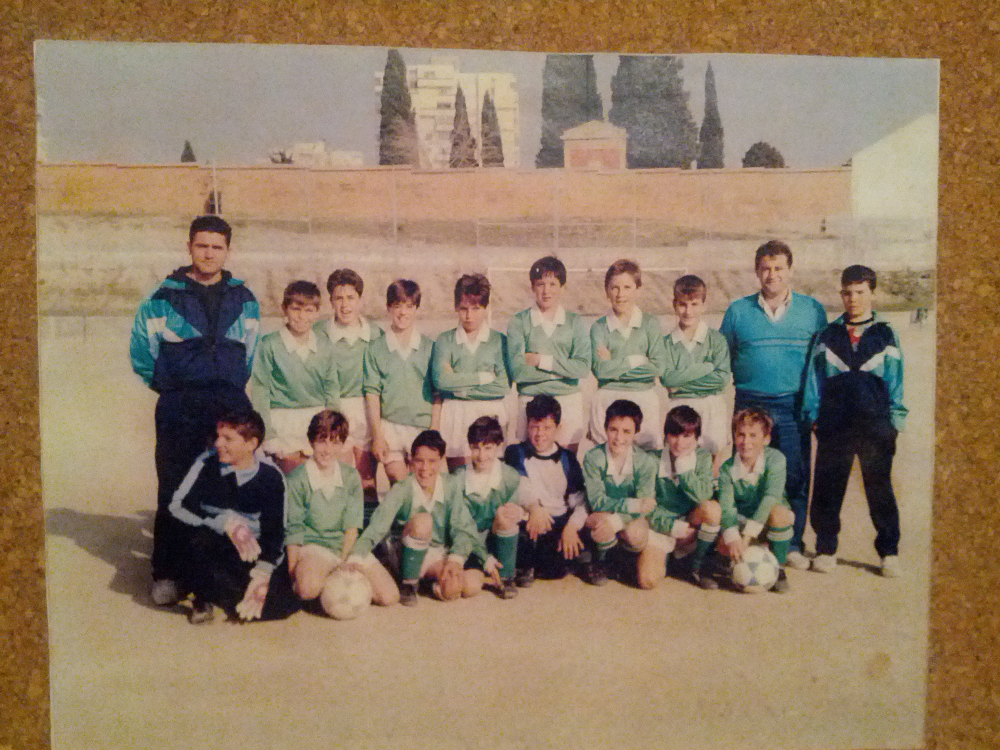
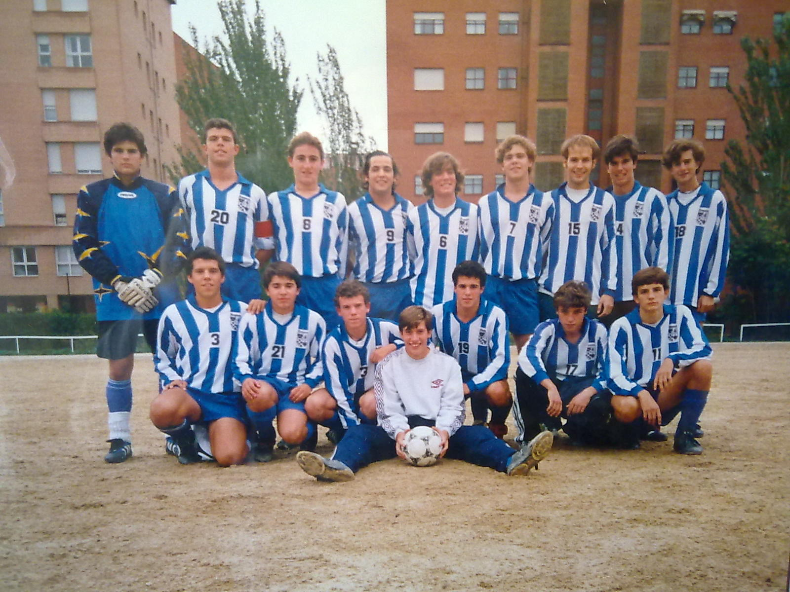
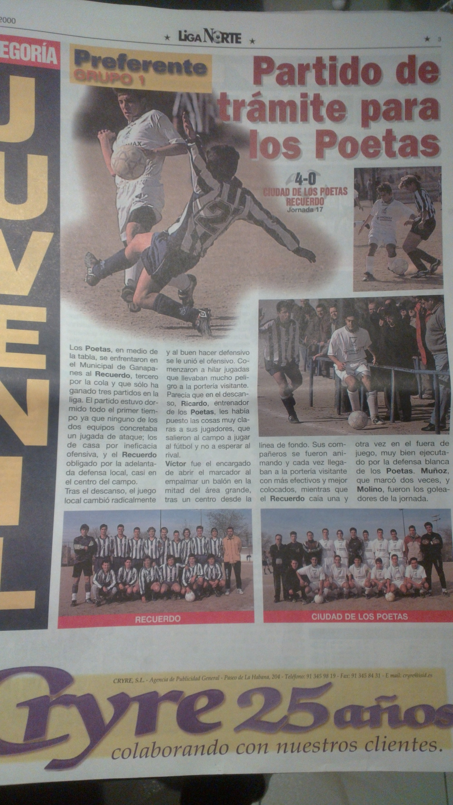
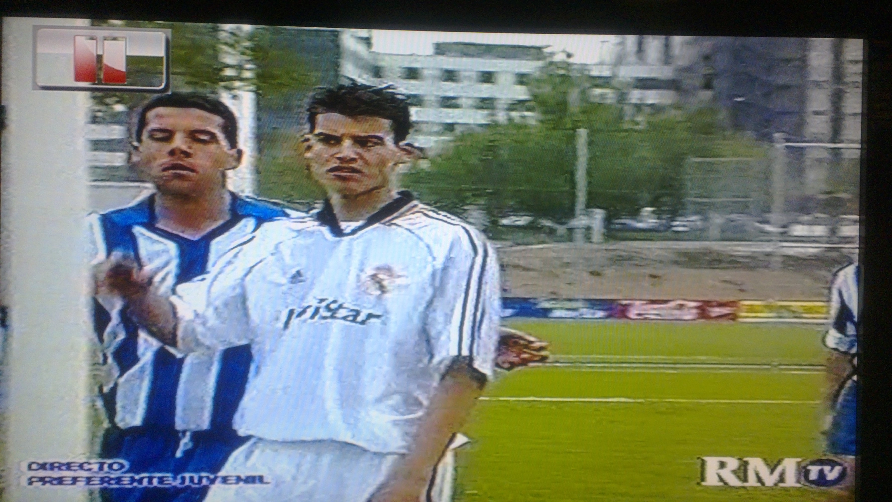
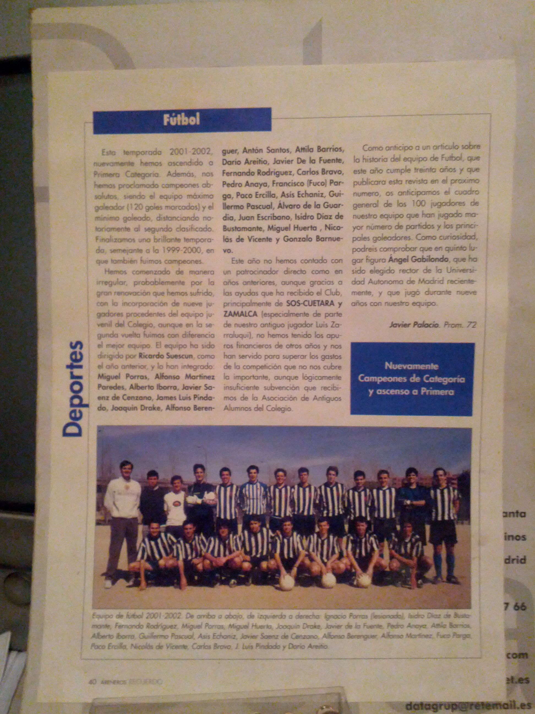
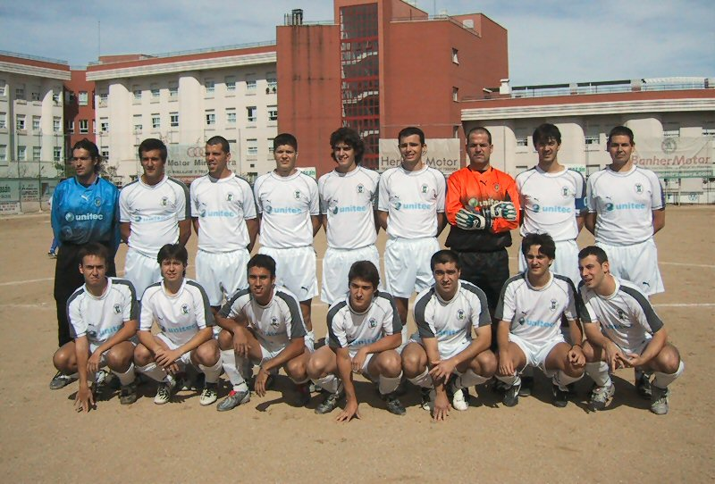

Football
Like most boys of my generation, my first memories of football are in the small square underneath my first home playing with neighborhood friends (Samu, Angel, Rafi, Dani, Javi and Jesus) football with two goals sweaters as well as in the schoolyard where we left as crazy as the siren recess to choose teams. Hence my first computer equipment out of the college football hall Blessed Sacrament, where we played against other religious schools as Calasancio, Salesians of Atocha or Valdeluz. In that team forged my passion for football with my friends Jose and Ramon, with whom after no party lacked a fanta orange with our parents at the bar closer to that of our school (here postfútbol also forged rods;-). This football friendship It pierced the walls of the school to the point where we were also the three together with our parents at the Bernabeu, at that time with reasonable prices and where partners accedíamos to low standing stands, a real treat that allowed you to talk to the players warming, ride the fence with goals, etc .. Things today are no longer seen. The next small step on the football team was in my neighborhood, the Esperanza, this time 11 football Pride all the kids we lived there and everyone knew the names of the kids playing in it. At that time in my school decided not to continue with teams Futsal beyond youngest, so what we were doing was playing on playground the school and the football field sports hall of Hope, where organized large "King of the track" with devices that were formed as people were arriving to the sports center. Era something great, you always had to play with different people depending on who came along for the when the cop. In one of those games, I met Cuqui, real star of the neighborhood and member Hope and who dazzled with my stops (lol). At that time I liked toggle Goalie and player and goalkeeper gave me particularly well, so Cuqui invited me to go to train one day Goalie them to try. And that was my first "serious" experience with soccer. For me to be involved in a team with a bar and social club itself (which you had to go to sign calls Friday) Passing checkups with public bands, made me feel all this professional with 10 years.
{kind=link}
My next step, since the preseason started with Hope, and as a good serious team ran a lot, I left the team as it was not (and still am) fact that pasta. I continued as a goalkeeper in a team fubol 11 in an amateur league at the Sports Luis Aragones with my friends Javi and Rafi neighborhood. I was well as they had no goalie and occasionally I boarded the team of the largest, was the "Bar Sami". From there and then I moved to the neighborhood of Arroyo del Fresno while I changed school, Our Lady of Remembrance. After three or four years looking for my site (I got to go through the team's College Basketball 8th Grade 14 years in the first youth team, playing against good teams like Fuenlabrada or Students to me you five puntos..jeje) passing as a goalkeeper for the Adarve (they had goalkeeper and I looked back football team). After this half year playing as a goalkeeper booking Adarve (I still remember great players like Oscar, Sergio, Juancar with later coincide again in Ganda, or the giant Philip) the next year I tried to get as player. At that time Adarve was beginning to be a serious team, I remember a central named Mario who came from Real Madrid on loan, coach of Real Madrid also came with Hector, my coach last year and eventually neighbor of the letters, and get playing became very complicated, so I went back looking for another opportunities. Then it happened a fact that changed my life forever. On the bus route to my new house, 134, always coincided with a couple of guys playing football, some such Joaquín Campillo and Guillermo Pascual. The latter gave me much grilled to happen to train one day with the school team even though I he insisted that was not level, but after an initial training in which Guillermo Pascual arrepentería all introduce life because of my shirt Zamorano later because I went to see do the testing for Real Madrid and lying to miss that day at school he was punished course no trip to the snow, I could never leave them and became with the rest of the team, in addition to teammates, friends forever.
{kind=link}
After a first half year in which the token was processed (hehehehe) the following year and began to give more level and I was accepted into the team. After three years in which we even out in the media
 and tie against Real Madrid in the former Ciudad Deportiva (only point that allowed all season with another draw against Adarve) TELEVISED !! {kind=link}
{kind=link}
Once finished the juvenile period, spent most alumni team, which imposed great respect us as only the best players each generation (or so it is supposed) could play there. I was lucky that year and played a generational change, so they needed freshmen or yes, so this year I did not play too.
{kind=link}
After winning the second regional league and thus ascend, seeing that he would have many more options than the previous year I decided to switch teams, and searched the neighborhood. I got a day of preseason camp lacoma, there were two teams training. Coincidences of life or rather my natural laziness made me ask the team involved in half the nearest camp, Ramón Gómez de la Serna, one of the teams more "personality" around Madrid football. A large esperiecia that would not have changed anything. The other team that was coming, by the way, was Lacoma, Maximum team rivalry and which had a mishap with Manolo, Tano, Pozi, Cavanillas and company (even my cousin !!) ...
After an interesting year in the "Front Botellín" that season we face a certain Movistar Gandarío, would win the league street and casually played in another area of the district (Our Lady of Luján), so I decided to make the change and start with them the 2003/2004 season
{kind=link}
To my surprise upon arrival, I encountered a team whose coach was extesorero Real Madrid Manuel Fernández Wheat with his son, his cousin and some friends had founded a year before what would be the foundation of a gradísimo team. The successes soon arrived and quickly became one of the best teams in the category, always trying to treat the ball well, sometimes displaying a spectacular football. Instead of maturity of the team came with the change of field Dehesa Vieja, one of the first public golf artificial turf what generation at that time, a real treat that allowed us to deploy our football was even better last. Year after year we were adding friends to your computer (One of which my great Pakito or Betordi) which made the costumes were a real family, absolutely key factor to get where we, despite not characterize us to have players of great experience because it was us who grew up as players become one great great player. In addition, some nights out and trips as we did to Gandarío (village of La Coruña that names the team) to play a friendly in the sports city of Depor (Abegondo) as a reward for promotion engrandecía further bond between us.
{kind=link}
{kind=link}
{kind=link}
{kind=link}
After three good seasons in regional second in which we come to coseguir a streak of 15 consecutive victories and game in which almost all parties, the year I'm going erasmus the team gets promoted to first Regional finding my replacement during my absence a great find. Cañas (brother of former captain of Betis and which came to play 2ºB) after several years of extreme was uncovered as an excellent center, and from that moment my fixture condition would never be such. The first season was incredibly well and got ascending to win the league and what would be the highest category in which I have come to participate and which had already Professional football, playing against teams like Coslada, Torrejón or San Fernando de Henares, with real stadiums with fans in some cases. I fulfilled one of my dreams getting reach a professional level.
{kind=link}
{kind=link}
{kind=link}
{kind=link}
The year began well in Preferente but injuries and poor experience we had made the same category new year, descend category. Having debuted in preferred, with a secondary role in the team, wanted leverage my years of football gift else were to give me more opportunities. I considered then return to that team had been my whole life, I remember also that year had risen and stood category again preferential, so I decided to do the preseason with them. Without being fully aware of the situation, those would be my last tail as a footballer, as an injury caused in summer with scythe had me limping all this season They joined the travel for work I had to make at that time, made me decide to leave permanently the soccer. Each entailment came limping and could barely hit the ball. My dear friend and team captain Goso (at last mate again in the football team remember 7), after an involuntary stomp on the injured foot during training, definitely led me to decide to end my career in the pitch, at least to federate level. That's when I decided to take my monkey playing with the different soccer teams 7 in which it participated. My foot did not allow for much more but I served well to still have that sense of competition. Scythe had already set in motion years ago reaching its culmination in the end of summer tournament in Barcelona to us every year we noted a true benchmark in the summer soccer tournaments 7 national scene. Admittedly, the participation of our beloved "Pepe" (friend of Pakito that lived in Barcelona and had played in the lower categories) would be the key for that runner.
{kind=link}
{kind=link}
{kind=link}
{kind=link}
Besides La Guadana created many years ago in various tournaments Marathon football school and the soccer championship beach we won in Gandia and I'm capitano proud, I have gone through many football teams 7 the room Suck my friends, Juanan, Iñigo, etc .. that Waldo F.C. Kansas where I again felt a football star (imagine the level ... jejej), that other Team Football 5 in Kansas that was played in a hockey arena walls (against which you could embed the opponent !!) or London's racing santander formed by components of the scythe expatriates there where he gave me time to get in the shot of Champions (lol).
But undoubtedly the best experience appart from La Guadana is participating in the football team 7 alumni of memories in the championship majadahonda, considered the first division soccer 7 Madrid which brings lots of exfutbolistas both our level as of even former first as the team of "waste" consists primarily of Atletico Madrid players like Kiko, Mena, Pedro Riesco, Santi Denia, Paunovic, Dani, Quique Estebaranz, etc .. and other players like Marcos Dani Asunsao or former Albacete, although I must say that we have our Own Star (plus a great team) great Iñaqui former captain of Getafe in his younger days. Translated with Google Translator
{kind=link}
{kind=link}
{kind=link}
{kind=link}
Summary
- Esperanza (benjamín y alevín 10 y 11 años 5º EGB)
- Bar Sami (alevín 11 años 5º EGB)
- Liga interna colegio( 13 años infantil séptimo EGB)
- Baloncesto(octavo EGB 14 años Infantil)
- Adarve(primero y principio segundo BUP Cadete 15 y 16 años)
- Recuerdo( 16 años Cadete Manolo Vilches segundo BUP)
- Recuerdo (17 años Juvenil Antonio Gasco tercero BUP)
- Recuerdo (18 años Juvenil Manolo Vilches/Fari COU)
- Recuerdo (19 años Juvenil Antonio Gasco/Atienza 1ºCarrera)
- Recuerdo (20 años Senior Richi Suéscun 2ºCarrera,Campeones de Liga 2ºRegional)
- Ramon Gomez de la Serna (21 años Javi/Marcial 3ºCarrera)
- Gandario (22 años a 28 años 3ºCarrera,Campeones de liga 1ºRegional)
- La Guadaña/Recuerdo F7 Campeones copa B Elite Fútbol, Subcampeones Business Sport Cup, Subcampeones Copa Barcelona, Campeones Liga 2º Gesdeport, Campeones torneo apertura liga Majadahonda F7